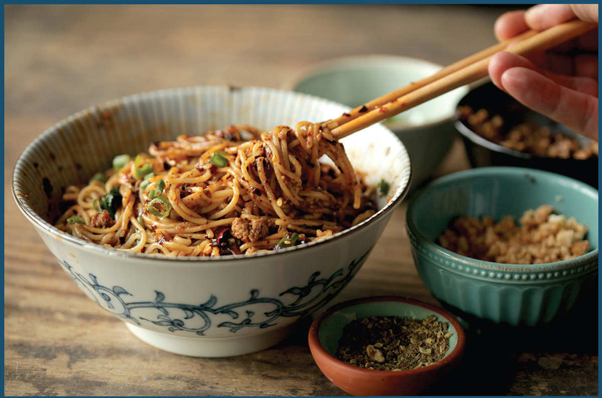

DAN DAN NOODLES
In the short time I spent in Chengdu, I found that dan dan miàn are to Sichuan what the hamburger is to the United States: they’re ubiquitous, there are certain expectations, but there are no hard and fast rules other than the basic ingredients (noodles, chile oil, pickled Sichuan vegetables, Sichuan peppercorns, and vinegar) and the manner in which they’re served (fast and cheap). They get their name from dan, a heavy stick carried over the shoulders onto which noodle vendors would balance two loads, the noodles on one side and the toppings on the other. Known as “peddler’s noodles,” they are the prototypical street food and, according to Hong Kong–based food writer Man Wei Leung, have been enjoyed as a quick, inexpensive meal on the streets of Chengdu and Chongqing continuously since 1841.
Beyond that they can be soupy or dry. They may or may not have sesame seeds or peanuts. They might have greens or bean sprouts boiled together with the noodles or not. Sometimes they have a dollop of creamy roasted sesame paste. Oftentimes they are sprinkled with a shower of fatty stir-fried minced pork. Sometimes they have raw garlic or even a sprinkle of sugar on top. In other words, get the chile oil and Sichuan peppercorn bit right and the rest is really up to you.
If you’ve got a batch of Sichuan Málà Chile Oil already sitting in your fridge, congratulations; you are 95 percent of your way to a quick, delicious meal. If not, head over to here and make it. I promise you will not regret it.
What’s that? You’re just not in the mood to babysit a wokful of aromatics for 45 minutes? That’s OK, too.
I know a lot of writers will tell you that it’s impossible to make great dan dan noodles with store-bought chile oil, and that may be true, but it’s definitely possible to make really really good dan dan noodles with store-bought chile oil. My favorite is Mom’s Málà, though I’ve also had good luck playing chile oil roulette in the Sichuan section of the Chinese supermarket. Lao Gan Ma Spicy Chile Crisp, with its heavy addition of fried shallots and soybeans, has a different flavor profile from a classic Sichuan málà chile oil, but it’s still delicious in a bowl of dan dan noodles, as are a number of high-quality competitors that have sprung up on the market (such as Fly by Jing’s Sichuan Chili Crisp or David Chang’s Chili Crunch).
The only other ingredient that can truly elevate a bowl of dan dan noodles is sui mi ya cai, which are salty-savory semidry preserved mustard greens that come from Yibin, in southeastern Sichuan. It’s hard stuff to find at the supermarket, where you are more likely to find its cousin zha cai, preserved mustard root. You can use zha cai in place of ya cai, but it doesn’t have quite the same umami punch. I order my Yibin sui mi ya cai from a company called Yibin Sui Mi Yacai Co., which is sold through themalamarket.com (or Amazon) and comes delivered in small foil pouches that last indefinitely until you open them. I stir-fry the ya cai together with fatty ground pork, cooking it until it’s completely dry to really concentrate its punchy flavor.
